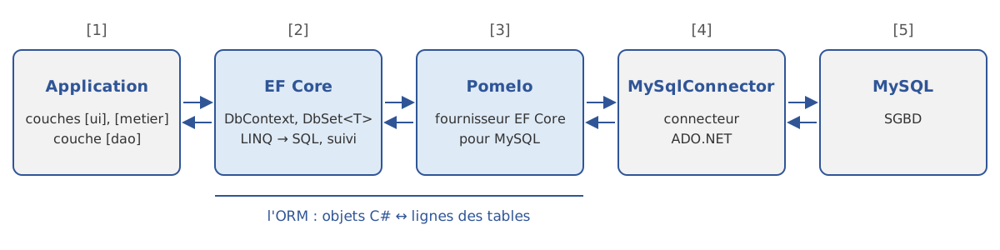
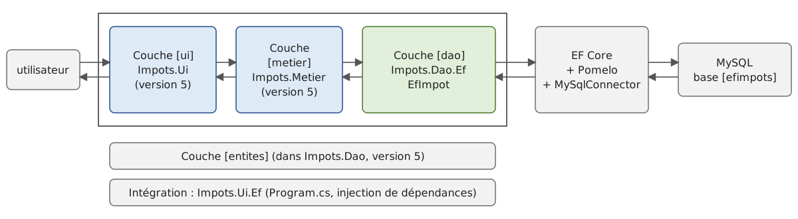

11. Entity Framework Core
Le chapitre précédent a montré comment une application .NET dialogue avec une base de données au travers d'un connecteur ADO.NET : on ouvre une connexion, on écrit des ordres SQL, on lit les lignes du résultat colonne par colonne et on les recopie dans des objets. Ce travail de recopie, des lignes vers les objets et des objets vers les ordres [INSERT], [UPDATE] et [DELETE], est répétitif. Il peut être confié à un outil : un ORM (Object-Relational Mapper). Ce chapitre présente l'ORM de Microsoft, Entity Framework Core (EF Core).
Le cours de 2008 ne parlait pas d'ORM : il citait seulement, en conclusion de son chapitre sur les bases de données, des « frameworks tiers d'accès aux données » (NHibernate, iBatis) et LINQ. Entity Framework est apparu quelques mois plus tard (2008, avec .NET 3.5 SP1) et l'auteur lui a consacré en 2012 un cours, « Introduction par l'exemple à Entity Framework 5 Code First ». Le présent chapitre est entièrement nouveau. Il reprend la base exemple des articles du chapitre 10 et se termine par la version 7 de l'application de calcul de l'impôt, dont la couche [dao] utilise EF Core.
11.1. Qu'est-ce qu'un ORM ?
11.1.1. Des objets et des tables
Une application C# manipule des objets : un article a un nom, un prix, un stock ; une commande a un client et une liste de lignes, chacune faisant référence à un article. Une base de données relationnelle range ces mêmes informations dans des tables : une ligne de la table [articles] par article, une ligne de la table [commandes] par commande, les liens entre lignes étant exprimés par des clés étrangères. Les deux mondes ne coïncident pas tout à fait :
- un objet référence directement d'autres objets ([commande.Client]) ; une ligne contient la valeur de la clé primaire d'une autre ligne ([ClientId]) ;
- un objet peut contenir une collection ([commande.Lignes]) ; une table ne contient que des valeurs simples, la collection est représentée par les lignes d'une autre table qui pointent vers la commande ;
- les types C# ([string], [decimal], [DateOnly], [bool]) et les types SQL ([varchar(30)], [decimal(10,2)], [date], [tinyint(1)]) ne sont pas les mêmes ;
- on interroge les objets avec C# (et LINQ) et les tables avec SQL.
Un ORM fait le lien entre les deux mondes. On lui décrit une fois pour toutes la correspondance entre les classes et les tables (le modèle) ; il se charge ensuite :
- de traduire les requêtes LINQ écrites en C# en ordres SQL [SELECT] ;
- de créer les objets à partir des lignes lues (on parle de matérialisation) ;
- de mémoriser les objets lus et de détecter ceux qui ont été modifiés, ajoutés ou supprimés ;
- de générer les ordres [INSERT], [UPDATE] et [DELETE] qui répercutent ces changements dans la base ;
- éventuellement de créer et de faire évoluer le schéma de la base (tables, colonnes, index) à partir des classes.
L'architecture d'une application qui utilise EF Core avec MySQL est la suivante :

- [1] : l'application. Sa couche [dao] ne dialogue plus avec un connecteur ADO.NET mais avec EF Core, au travers d'un objet [DbContext] et de requêtes LINQ ;
- [2] : EF Core, indépendant du SGBD : modèle, traduction des requêtes LINQ, suivi des modifications, migrations ;
- [3] : le fournisseur EF Core propre au SGBD (ici Pomelo pour MySQL) : il connaît le dialecte SQL du SGBD et ses types de colonnes ;
- [4] : le connecteur ADO.NET du SGBD, celui du chapitre 10 (MySqlConnector) : EF Core ne remplace pas ADO.NET, il l'utilise ;
- [5] : le SGBD.
11.1.2. EF Core et Entity Framework 6
Il existe deux produits portant le nom Entity Framework :
- Entity Framework 6 (EF 6), le produit d'origine, conçu pour le .NET Framework de Windows (depuis sa version 6.3, il fonctionne aussi sur .NET Core et ses successeurs). Il est encore maintenu mais n'évolue plus ;
- Entity Framework Core, une réécriture complète apparue en 2016 avec .NET Core. Il fonctionne sur toutes les plates-formes de .NET (Windows, Linux, macOS) et c'est lui qui reçoit toutes les nouveautés. Sa version suit celle de .NET : EF Core 8 avec .NET 8, EF Core 9 avec .NET 9, EF Core 10 avec .NET 10.
Pour une nouvelle application, on utilise EF Core. Les deux produits ont des API proches ([DbContext], [DbSet<T>], LINQ, migrations), si bien que ce qui est dit ici reste en grande partie vrai pour EF 6.
11.1.3. Les fournisseurs
EF Core accède à un SGBD au travers d'un fournisseur (« provider »), distribué dans un paquet NuGet. Microsoft fournit ceux de SQL Server, SQLite et Azure Cosmos DB ; les autres sont écrits par les éditeurs des SGBD ou par la communauté : [Npgsql.EntityFrameworkCore.PostgreSQL] pour PostgreSQL, [Oracle.EntityFrameworkCore] pour Oracle, [Pomelo.EntityFrameworkCore.MySql] et [MySql.EntityFrameworkCore] (d'Oracle) pour MySQL. Nous utilisons Pomelo, le fournisseur MySQL le plus utilisé, qui s'appuie sur le connecteur [MySqlConnector] du chapitre 10.
Un fournisseur est compilé pour une version précise d'EF Core : Pomelo 9 fonctionne avec EF Core 9, et les versions de Pomelo paraissent souvent plusieurs mois après celles d'EF Core. Le cours utilise EF Core 9.0.0 et Pomelo 9.0.0, sur .NET 10. Cette combinaison fonctionne : EF Core 9 cible .NET 8 ([net8.0]), et une bibliothèque compilée pour .NET 8 fonctionne sans modification sur .NET 10. Le passage à EF Core 10 se fera en changeant les numéros de version des paquets ; le code de ce chapitre devrait alors fonctionner sans modification, à quelques détails du SQL généré près. Nous rencontrerons cependant, au paragraphe sur LINQ, une petite incompatibilité entre EF Core 9 et le compilateur C# 14.
Les paquets utilisés dans ce chapitre sont les suivants :
Paquet | Rôle |
[Microsoft.EntityFrameworkCore] 9.0.0 | EF Core lui-même |
[Pomelo.EntityFrameworkCore.MySql] 9.0.0 | le fournisseur MySQL ; il amène [Microsoft.EntityFrameworkCore.Relational] et [MySqlConnector] |
[Microsoft.EntityFrameworkCore.Design] 9.0.0 | le code utilisé par l'outil en ligne de commande [dotnet ef] (migrations) |
outil [dotnet-ef] 9.0.0 | l'outil en ligne de commande [dotnet ef] |
L'outil [dotnet ef] s'installe une fois pour toutes sur la machine de développement :
Les outils « globaux » de .NET sont installés dans le dossier [.dotnet/tools] du dossier personnel de l'utilisateur, que l'installeur du SDK ajoute au chemin des exécutables (sous Linux, on l'ajoute soi-même : [export PATH=$PATH:$HOME/.dotnet/tools]).
11.1.4. Code First et Database First
Le modèle d'EF Core (la correspondance entre classes et tables) peut être construit de deux façons :
- Code First : on écrit les classes C#, et EF Core en déduit le schéma de la base, qu'il peut créer lui-même puis faire évoluer au fil des versions de l'application (les migrations). C'est l'approche de ce chapitre, et celle du cours de 2012 de l'auteur ;
- Database First : la base existe déjà, et l'on génère les classes à partir de son schéma avec la commande [dotnet ef dbcontext scaffold]. C'est l'approche des applications qui doivent exploiter une base existante. Le code généré est du même type que celui que nous écrirons à la main.
11.2. Un premier exemple
11.2.1. Le projet
Chaque exemple de ce chapitre est un projet console : l'outil [dotnet ef], utilisé pour les migrations, a besoin d'un fichier de projet [.csproj]. Les projets sont regroupés dans la solution [11-efcore/11-efcore.slnx]. Le premier, [Premier], est créé par les commandes suivantes :
Son fichier de projet est le suivant :
- lignes 12-13 : les deux paquets ajoutés par [dotnet add package].
La base de données utilisée est la base [efarticles] du serveur MySQL local, celui de Laragon (cf. annexes). Elle n'a pas besoin d'exister : EF Core va la créer.
11.2.2. L'entité [Article]
Une classe dont les objets sont enregistrés dans une table est appelée une entité. Notre première entité est un article du magasin, comme dans la table [articles] du cours de 2008, reprise au chapitre 10 :
- ligne 4 : une classe C# ordinaire. Elle ne dérive d'aucune classe d'EF Core et ne porte aucun attribut : on parle de POCO (Plain Old CLR Object) ;
- ligne 7 : la propriété [Id] sera la clé primaire de la table. C'est une convention d'EF Core : une propriété nommée [Id] (ou [ArticleId], le nom de la classe suivi de [Id]) est la clé primaire. Comme elle est de type entier, ses valeurs seront générées par le SGBD (colonne [AUTO_INCREMENT] de MySQL) ;
- lignes 9-12 : chaque propriété publique en lecture/écriture devient une colonne de même nom. La propriété [Nom] est initialisée avec la chaîne vide pour satisfaire le compilateur (types nullables activés : une propriété de type [string] ne doit pas rester [null]) ;
- ligne 15 : un affichage commode de l'article.
11.2.3. Le contexte
L'accès à la base passe par un objet de type [DbContext] :
- ligne 7 : on dérive la classe [DbContext] d'EF Core. Un objet [ArticlesContext] représente une session de travail avec la base : il ouvre la connexion quand il en a besoin, mémorise les entités qu'il a lues et sait enregistrer leurs modifications ;
- ligne 10 : un [DbSet<Article>] représente la table des articles. C'est sur lui que l'on écrit les requêtes LINQ et que l'on ajoute ou supprime des articles. La propriété est écrite comme un membre à corps d'expression qui appelle [Set<Article>()] : chaque [DbSet<T>] déclaré dans le contexte fait entrer le type [T] dans le modèle ;
- ligne 13 : la méthode [OnConfiguring] est appelée par EF Core lors de la première utilisation du contexte, pour le configurer ;
- ligne 15 : la chaîne de connexion, la même qu'au chapitre 10 : serveur, port, base, utilisateur et mot de passe (vide pour l'utilisateur [root] de Laragon) ;
- ligne 18 : le contexte utilise le fournisseur Pomelo. Le second paramètre indique la version du serveur MySQL : le SQL généré en dépend, certaines fonctionnalités n'existant que dans les versions récentes. Laragon fournit MySQL 8 ; nous indiquons la version 8.0.36. Pomelo propose aussi [ServerVersion.AutoDetect(connexion)], qui interroge le serveur pour connaître sa version. C'est commode, mais cela coûte une connexion supplémentaire à chaque configuration d'un contexte, et le SQL généré dépend alors du serveur rencontré. Une version explicite rend le comportement de l'application reproductible ;
- ligne 20 : la méthode [LogTo] demande à EF Core d'écrire son journal avec la méthode [Console.WriteLine]. On ne garde que la catégorie de messages [DbLoggerCategory.Database.Command], celle des ordres SQL exécutés, au niveau [LogLevel.Information]. Sans ce filtre, le journal est très bavard. Voir le SQL envoyé au serveur est le meilleur moyen de comprendre ce que fait EF Core : nous le ferons dans tous les exemples.
11.2.4. Le programme
- ligne 4 : création du contexte. Une déclaration [using] (C# 8) garantit qu'il sera libéré ([Dispose]) à la fin du programme, ce qui ferme la connexion qu'il a éventuellement ouverte ;
- ligne 7 : [contexte.Database.EnsureDeleted()] supprime la base si elle existe ;
- ligne 8 : [contexte.Database.EnsureCreated()] crée la base et ses tables à partir du modèle. Ces deux méthodes sont commodes pour des exemples et des tests ; une application réelle fait évoluer sa base avec les migrations, que nous verrons plus loin ;
- lignes 11-13 : on ajoute trois articles au [DbSet]. Rien n'est encore envoyé au serveur : le contexte mémorise seulement que ces trois objets sont à insérer. On ne donne pas de valeur à la propriété [Id], qui sera générée par le SGBD ;
- ligne 15 : [SaveChanges] envoie au serveur tous les ordres SQL nécessaires pour enregistrer les changements mémorisés, et rend le nombre de lignes touchées ;
- ligne 20 : une requête LINQ sur le [DbSet] : les articles par ordre alphabétique. Elle est exécutée par le SGBD au moment où la boucle [foreach] commence à la parcourir.
Résultats :
Commentaires :
- chaque ordre SQL est précédé d'un en-tête de deux lignes : le type de l'événement ([CommandExecuted]), la durée d'exécution, les paramètres de l'ordre ;
- ligne 4 : [EnsureDeleted] a supprimé la base, qui existait (le programme avait déjà été exécuté) ;
- lignes 7-20 : [EnsureCreated] a créé la base, lui a donné le jeu de caractères [utf8mb4] (l'Unicode complet de MySQL), puis a créé la table [Articles] à partir de l'entité [Article] : le nom de la table est celui de la propriété [DbSet] du contexte, les colonnes portent le nom des propriétés, la colonne [Id] est la clé primaire, à valeur générée ([AUTO_INCREMENT]). Toutes les colonnes sont [NOT NULL] : les types [int] et [decimal] n'admettent pas la valeur [null], et le type [string] non plus, puisque les types nullables sont activés (nous y revenons plus loin) ;
- on remarquera les types choisis par défaut : [longtext] pour une chaîne (un texte de taille quelconque), et [decimal(65,30)] pour un [decimal] (65 chiffres dont 30 après la virgule). Ils sont rarement ceux que l'on veut : le paragraphe suivant montre comment les préciser ;
- lignes 21-41 : [SaveChanges] a envoyé une seule commande, contenant trois ordres [INSERT] paramétrés. Chacun est suivi d'un [SELECT] qui relit la clé primaire générée par MySQL ([LAST_INSERT_ID()]) : EF Core la recopie dans la propriété [Id] de l'objet inséré. Les valeurs des paramètres sont masquées ('?') : ce sont des données de l'application, qui peuvent être confidentielles. Pendant la mise au point, on peut les faire apparaître en ajoutant l'option [.EnableSensitiveDataLogging()] à la configuration du contexte ;
- lignes 42-50 : la requête LINQ [contexte.Articles.OrderBy(a => a.Nom)] a été traduite en un ordre [SELECT ... ORDER BY]. EF Core a créé un objet [Article] par ligne lue.
Nous n'avons écrit aucun ordre SQL, aucun code de lecture de colonne : c'est tout l'intérêt d'un ORM. On voit aussi qu'il ne dispense pas de connaître SQL : pour savoir si le SQL généré est correct et efficace, il faut savoir le lire.
11.3. Le modèle
EF Core construit son modèle à partir des entités, en trois étapes :
- il applique d'abord ses conventions ;
- il les complète ou les corrige avec les annotations (attributs) placées sur les entités ;
- il applique enfin la configuration écrite en C# dans la méthode [OnModelCreating] du contexte : l'API fluide.
11.3.1. Les conventions
Nous en avons vu l'essentiel dans le premier exemple :
- toute propriété publique ayant un accesseur [get] et un accesseur [set] (ou [init]) est enregistrée dans une colonne de même nom ;
- la propriété [Id] ou [<Entité>Id] est la clé primaire ; si elle est entière, ses valeurs sont générées par le SGBD ;
- le nom de la table est celui de la propriété [DbSet] du contexte (à défaut, celui de la classe) ;
- une propriété d'un type nullable ([int?], [DateOnly?], [string?]) donne une colonne [NULL] ; une propriété d'un type non nullable ([int], [decimal], [string] quand les types référence nullables sont activés) donne une colonne [NOT NULL] ;
- une propriété qui fait référence à une autre entité, ou à une collection d'entités, définit une relation (nous le verrons plus loin).
11.3.2. Les annotations et l'API fluide
Le projet [Modele] définit deux entités configurées de deux façons différentes. La première l'est par des annotations :
- lignes 1-2 : les attributs utilisés appartiennent à ces deux espaces de noms de .NET. Ils ne sont pas propres à EF Core : les attributs de validation ([Required], [MaxLength]) servent aussi à valider les données des formulaires ASP.NET Core ;
- ligne 7 : le nom de la table ;
- lignes 11-12 : la clé primaire ne s'appelle pas [Id] : l'attribut [Key] la désigne ;
- lignes 15-16 : une colonne obligatoire ([Required] : [NOT NULL]) d'au plus 50 caractères ([MaxLength(50)] : [varchar(50)]). [Required] est ici redondant, le type [string] non nullable suffisant à rendre la colonne obligatoire ; il était indispensable avant C# 8 ;
- lignes 19-20 : le type [string?] indique une description facultative : la colonne acceptera la valeur [NULL] ;
- lignes 23-24 : [Column] fixe le nom de la colonne et son type SQL : [decimal(10,2)], 10 chiffres dont 2 après la virgule ;
- ligne 27 : une date facultative. Le type [DateOnly] (.NET 6) représente une date sans heure : Pomelo l'associe au type SQL [date] ;
- lignes 30-31 : [NotMapped] exclut une propriété du modèle. Ici, c'est inutile : une propriété sans accesseur [set] n'est pas enregistrée. L'attribut documente l'intention.
La seconde entité ne porte aucun attribut :
Elle est configurée dans le contexte, par l'API fluide :
- ligne 13 : la base [efmodele] n'existera jamais : ce contexte ne sert qu'à examiner le modèle, ce qui ne nécessite pas de connexion (la version du serveur est donnée explicitement) ;
- ligne 18 : la méthode [OnModelCreating] reçoit un objet [ModelBuilder] avec lequel on décrit le modèle. Elle est appelée une seule fois par type de contexte : EF Core met le modèle en cache ;
- ligne 20 : [Entity<Fournisseur>(...)] reçoit une lambda qui configure l'entité [Fournisseur]. Chaque méthode rend l'objet de configuration, ce qui permet d'enchaîner les appels : d'où le nom d'« API fluide » ;
- ligne 22 : le nom de la table ;
- ligne 23 : la clé primaire est la propriété [Numero] ;
- ligne 24 : une colonne obligatoire d'au plus 60 caractères ;
- ligne 25 : un index unique sur la raison sociale : deux fournisseurs ne peuvent avoir la même. Il n'existe pas d'attribut de validation équivalent ; EF Core fournit l'attribut [Index], placé sur la classe, que nous utiliserons pour les articles ;
- ligne 26 : la propriété [Telephone] est enregistrée dans la colonne [tel] ;
- ligne 27 : la colonne [DateCreation] a une valeur par défaut, calculée par le SGBD. Lors d'une insertion, EF Core n'enverra pas de valeur pour cette colonne si la propriété a la valeur par défaut de son type, ce qui laissera le SGBD utiliser [CURRENT_TIMESTAMP].
Tout ce que font les annotations peut être fait avec l'API fluide, et l'API fluide permet davantage (index, valeurs par défaut, clés composées, relations complexes). Les annotations ont l'avantage de placer la configuration à côté de la propriété ; l'API fluide, celui de laisser les entités indépendantes d'EF Core et de rassembler la configuration en un seul endroit. Les deux sont souvent mélangées : l'API fluide a priorité en cas de conflit.
Le programme [Program.cs] affiche le modèle construit par EF Core, puis le script SQL qui créerait les tables :
- ligne 8 : la propriété [Model] du contexte donne accès au modèle : ses entités ([IEntityType]), et pour chacune, ses propriétés ([IProperty]) ;
- ligne 10 : [ClrType] est le type C# de l'entité, [GetTableName()] le nom de sa table ;
- lignes 13-15 : pour chaque propriété, on affiche le nom de la colonne, son type SQL, si elle accepte la valeur [NULL] et si elle fait partie de la clé primaire ;
- ligne 22 : [Database.GenerateCreateScript()] rend le script SQL de création des tables, sans l'exécuter. C'est le script qu'exécuterait [EnsureCreated].
Résultats :
- lignes 2-6 : l'entité [Fournisseur] et ses colonnes. Les types SQL viennent de la configuration ([varchar(60)], [varchar(20)]) ou des choix du fournisseur pour un type C# : [int] pour [int], [datetime(6)] (précision à la microseconde) pour [DateTime] ;
- lignes 7-12 : l'entité [Produit]. Les propriétés de types nullables ([DateOnly?], [string?]) donnent des colonnes [NULL] ; la propriété [PrixTTC] ne figure pas dans le modèle ;
- lignes 16-33 : le script de création. On y retrouve toute la configuration : noms des tables et des colonnes, types, [NOT NULL], valeur par défaut, clés primaires (avec [AUTO_INCREMENT] pour les clés entières), index unique. Les colonnes de texte reçoivent le jeu de caractères [utf8mb4].
11.3.3. Types nullables et colonnes NULL
Les types référence nullables (C# 8, activés par [<Nullable>enable</Nullable>] dans les projets du cours) ont une conséquence sur le modèle : EF Core lit les annotations de nullabilité produites par le compilateur. Une propriété [string] donne une colonne [NOT NULL], une propriété [string?] une colonne [NULL]. Dans un projet où les types nullables ne sont pas activés, toutes les colonnes de texte acceptent [NULL], sauf celles marquées [Required].
Il faut donc choisir le type de chaque propriété avec soin : il exprime à la fois une règle du code C# (« cette valeur peut manquer ») et une contrainte de la base. Pour une propriété obligatoire, deux écritures sont courantes :
La seconde est plus sûre : le compilateur refuse [new Article { Prix = 10 }], où le nom a été oublié. EF Core sait créer des entités ayant des membres [required] : il ne passe pas par l'initialiseur d'objet du code C#. Pour les propriétés de navigation vers une autre entité, qu'EF Core remplit lui-même, on rencontre l'écriture [= null!] : nous la verrons avec les relations.
11.4. Les exemples suivants : deux bibliothèques communes
Les exemples des paragraphes suivants travaillent tous sur la base [efarticles] et sa table [articles], remplie avec les six articles du chapitre 10. Plutôt que de répéter l'entité et le contexte dans chaque projet, nous les plaçons dans une bibliothèque de classes, [Articles.Data], que les projets référencent. Nous remplaçons aussi le journal d'EF Core, trop bavard pour nos exemples, par un journal plus compact, placé dans une seconde bibliothèque, [Ef.Outils].
11.4.1. Le journal SQL compact
- lignes 12-15 : un membre d'extension (C# 14, cf. chapitre 4) du type [DbContextOptionsBuilder], le type du paramètre de [OnConfiguring]. On écrira [options.UseMySql(...).AvecJournalSql()], comme si la méthode avait été écrite par EF Core. Elle appelle une autre surcharge de [LogTo], qui reçoit deux fonctions : un filtre, qui choisit les événements à journaliser, et une méthode d'affichage, qui reçoit l'événement lui-même ([EventData]) et non un texte déjà mis en forme ;
- lignes 19-22 : les événements retenus. Chaque événement d'EF Core a un identifiant ; ceux des opérations relationnelles sont des constantes de la classe [RelationalEventId]. Nous gardons les commandes SQL exécutées ou en échec, ainsi que le début, la validation et l'annulation des transactions ;
- lignes 27-43 : à chaque type d'événement correspond une classe dérivée de [EventData], qui en donne le détail : [CommandExecutedEventData] contient la commande ADO.NET exécutée ([DbCommand], cf. chapitre 10). Le choix se fait par un [switch] avec filtrage par motif de type et clauses [when] ;
- lignes 52-54 : le texte de la commande, ligne par ligne, en retrait et précédé de [SQL>], les lignes vides étant supprimées ;
- lignes 56-60 : les paramètres de la commande et leurs valeurs. Nous les lisons directement dans la commande : notre journal les affiche donc toujours, alors que le journal d'EF Core les masque par défaut. C'est acceptable pour un cours, pas pour une application en production.
11.4.2. L'entité et le contexte des articles
L'entité [Article] de la bibliothèque [Articles.Data] utilise les annotations du paragraphe précédent :
- ligne 8 : la table s'appelle [articles], comme au chapitre 10 ;
- ligne 9 : l'attribut [Index] d'EF Core (espace de noms [Microsoft.EntityFrameworkCore]) crée un index unique sur la colonne [Nom] : deux articles ne peuvent avoir le même nom, comme dans la base du cours de 2008 ;
- lignes 16-17 : un nom obligatoire de 30 caractères au plus. Le membre est [required] : le code qui crée un article doit donner son nom ;
- lignes 20-21 : un prix en [decimal(10,2)].
Le contexte est le suivant :
- lignes 10-11 : la chaîne de connexion et la version du serveur, publiques pour que les autres projets puissent les utiliser ;
- ligne 14 : un premier constructeur, sans paramètre : la configuration sera faite par [OnConfiguring] ;
- ligne 17 : un second constructeur, qui reçoit une configuration toute faite, un objet [DbContextOptions<ArticlesContext>], et la passe au constructeur de la classe [DbContext]. C'est ce constructeur qu'utilise l'injection de dépendances (nous le verrons plus loin) ;
- ligne 25 : [OnConfiguring] est appelée dans les deux cas. [IsConfigured] indique si le contexte a reçu une configuration par son constructeur. Si ce n'est pas le cas, on utilise la configuration par défaut : MySQL, avec le journal compact ;
- lignes 33-48 : une méthode statique qui recrée la base avec ses six articles. Elle crée un contexte avec une configuration sans journal : on ne veut pas voir le SQL de cette initialisation dans les résultats des exemples. [DbContextOptionsBuilder<T>] est la version générique de l'objet que reçoit [OnConfiguring] ; sa propriété [Options] rend la configuration construite. [AddRange] ajoute plusieurs entités à la fois.
Les projets d'exemple référencent la bibliothèque [Articles.Data], qui référence elle-même [Ef.Outils] :
Les paquets d'EF Core et de Pomelo, référencés par [Articles.Data], sont hérités par les projets qui la référencent.
11.5. Les opérations de base : ajouter, lire, modifier, supprimer
11.5.1. Le programme [Crud]
Le projet [Crud] montre les quatre opérations de base (CRUD : Create, Read, Update, Delete) :
Résultats :
Commentaires :
- ligne 10 : [Find(1)] cherche l'article de clé primaire 1. Le type rendu est [Article?] : [Find] rend [null] si la clé n'existe pas. Le SQL généré (lignes 2-7) est un [SELECT] paramétré, limité à une ligne ;
- ligne 13 : le second appel de [Find(1)] n'envoie aucun ordre SQL, et rend le même objet (ligne 10). Le contexte mémorise les entités qu'il a lues ou ajoutées : avant d'interroger la base, [Find] regarde si l'entité demandée n'est pas déjà suivie. Un contexte ne contient jamais deux objets pour une même ligne de la base ;
- lignes 18-19 : ajout d'un article. Avant [SaveChanges], l'article est dans l'état [Added] et son [Id] vaut 0 (ligne 12). [SaveChanges] envoie un ordre [INSERT], récupère la clé générée et la place dans [x.Id] (ligne 21). L'article passe dans l'état [Unchanged] : il est identique à la ligne de la base ;
- ligne 26 : pour modifier une ligne de la base, il suffit de modifier l'objet. Aucune méthode [Update] n'est nécessaire : le contexte a gardé une copie des valeurs lues (les valeurs d'origine) et compare les valeurs actuelles à celles-ci. L'article passe dans l'état [Modified] (ligne 23) ;
- ligne 27 : [contexte.Entry(x)] donne accès aux informations de suivi de l'entité [x] : son état ([State]) et, pour chaque propriété, sa valeur d'origine ([OriginalValue]) et sa valeur actuelle ([CurrentValue]) ;
- ligne 29 : l'ordre [UPDATE] généré (lignes 25-28) ne modifie que la colonne qui a changé, [Prix]. Il est suivi d'un [SELECT ROW_COUNT()] : EF Core vérifie que l'ordre a bien modifié une ligne ;
- lignes 34-36 : la suppression. [Remove] fait passer l'article dans l'état [Deleted] ; [SaveChanges] envoie l'ordre [DELETE]. L'objet n'est alors plus suivi par le contexte : il est dans l'état [Detached] ;
- lignes 41-43 : l'objet [contexte.ChangeTracker] (le « suivi des modifications ») gère les entités suivies. [DetectChanges] compare les valeurs actuelles des entités aux valeurs d'origine (EF Core l'appelle automatiquement dans [SaveChanges], [Entry] et quelques autres méthodes). La propriété [DebugView.LongView] rend une description de toutes les entités suivies (lignes 38-44) : le contexte ne suit plus que le vélo, dont le stock est passé de 10 à 9. L'opérateur [!] de [velo!] indique au compilateur que [velo], de type [Article?], n'est pas [null] ici.
Deux détails du SQL généré par Pomelo :
- l'ordre [INSERT], suivi du [SELECT] de la clé générée, est encadré par une transaction (lignes 13-20) : la commande contient deux ordres SQL qui doivent réussir ensemble. Nous reviendrons sur les transactions ;
- les ordres [UPDATE] et [DELETE] isolés ne sont pas encadrés par une transaction. Ils sont précédés de [SET AUTOCOMMIT = 1], un réglage de la session MySQL (chaque ordre est validé dès son exécution) que le fournisseur rétablit par précaution. Ce réglage n'a pas d'effet sur une transaction ouverte explicitement, comme nous le verrons.
11.5.2. Les états d'une entité
Le suivi des modifications repose sur l'état de chaque entité, une valeur de l'énumération [EntityState] :
État | Signification |
[Detached] | l'objet n'est pas suivi par le contexte (créé par [new] et pas encore ajouté, ou supprimé de la base) |
[Added] | l'objet a été ajouté au contexte ([Add]) : [SaveChanges] l'insérera dans la base |
[Unchanged] | l'objet a été lu dans la base (ou enregistré) et n'a pas été modifié depuis |
[Modified] | au moins une propriété a été modifiée : [SaveChanges] enverra un ordre [UPDATE] |
[Deleted] | l'objet a été marqué pour suppression ([Remove]) : [SaveChanges] enverra un ordre [DELETE] |
On retiendra le cycle de travail avec EF Core : on lit des entités, on les modifie comme des objets ordinaires, on en ajoute et on en supprime, puis on appelle [SaveChanges], qui envoie à la base, en une fois, tous les ordres nécessaires. Le contexte joue le rôle d'une unité de travail (« unit of work »). Un contexte est un objet léger, prévu pour une durée de vie courte : une unité de travail, par exemple une requête HTTP dans une application web. On n'utilise pas un même contexte pendant toute la vie d'une application : il accumulerait les entités suivies.
11.5.3. Les mises à jour en masse et la lecture sans suivi
Le suivi des modifications a un coût : pour augmenter le prix de cent articles, il faut lire les cent articles, les modifier un à un, et [SaveChanges] enverra cent ordres [UPDATE]. EF Core 7 a introduit deux méthodes qui envoient directement un ordre SQL portant sur toutes les lignes sélectionnées par une requête : [ExecuteUpdate] et [ExecuteDelete]. Le projet [MajEnMasse] les présente, ainsi que la lecture sans suivi :
Résultats :
Commentaires :
- lignes 10-12 : [ExecuteUpdate] s'applique à une requête ([Where]) et reçoit une lambda qui décrit les colonnes à modifier : [SetProperty(propriété, nouvelle valeur)]. La nouvelle valeur peut dépendre de la ligne elle-même ([a => a.StockMinimum * 2]). L'ordre SQL (lignes 3-5) est exécuté immédiatement, sans [SaveChanges], et rend le nombre de lignes modifiées ;
- lignes 16-18 : une hausse de 10 % des petits prix. On remarquera que les constantes du code C# ([150], [1.1M]) sont écrites dans le texte même de l'ordre SQL ([150.0], [1.1]) ;
- ligne 23 : [ExecuteDelete] supprime les lignes sélectionnées par la requête, ici l'arc, seul article de plus de 550 euros ;
- ligne 28 : [AsNoTracking()] demande une lecture sans suivi : les entités lues ne sont pas mémorisées par le contexte (ligne 26). C'est plus rapide et plus économe en mémoire : on l'utilise pour les données que l'on lit sans les modifier (affichage, calculs). La contrepartie est que [SaveChanges] ignore les modifications de ces entités (ligne 27) ;
- lignes 37-41 : un piège. [ExecuteUpdate] travaille directement sur la base : il ne modifie pas les entités déjà chargées par le contexte. Le vélo suivi par le contexte garde son ancien prix (ligne 37) jusqu'à ce qu'on le relise avec [contexte.Entry(velo).Reload()]. [Single] rend l'unique élément de la requête et lance une exception s'il y en a zéro ou plusieurs : c'est pourquoi le SQL généré demande deux lignes ([LIMIT 2]).
11.6. LINQ traduit en SQL
11.6.1. Les requêtes
Le chapitre 5 a présenté LINQ sur des collections en mémoire. Les mêmes opérateurs ([Where], [OrderBy], [Select], [First], [Count], [Sum]...) s'appliquent à un [DbSet<T>], mais ils ne sont pas exécutés par .NET : EF Core les traduit en SQL, et c'est le SGBD qui les exécute. Le projet [Linq] en donne plusieurs exemples :
Résultats :
Commentaires :
- lignes 10-13 : [Where] et [OrderBy] deviennent les clauses [WHERE] et [ORDER BY] (lignes 5-6). La requête n'est exécutée qu'au moment où l'on demande ses résultats, ici par [ToList] : c'est l'exécution différée de LINQ (chapitre 5) ;
- lignes 18-20 : une projection. [Select] crée pour chaque article un objet d'un type anonyme ne contenant que le nom et la valeur du stock. Le SQL généré (ligne 9) ne demande que les colonnes utiles et fait le calcul lui-même. Les objets du type anonyme ne sont pas des entités : ils ne sont pas suivis par le contexte. Le fournisseur convertit le stock, entier, en [decimal(65,30)] avant la multiplication, d'où les nombreuses décimales du résultat, que l'on formate avec [{v.Valeur:0.00}] ;
- ligne 30 : [FirstOrDefault] devient [LIMIT 1]. La variable [prixMin] du programme devient un paramètre de l'ordre SQL ([@__prixMin_0], ligne 21), alors qu'une constante écrite dans la lambda est recopiée dans le texte SQL. On n'a donc pas à se soucier des injections SQL : les valeurs venant de l'extérieur du programme sont toujours passées en paramètres. C'est la règle que le chapitre 10 appliquait à la main avec les requêtes paramétrées ;
- lignes 35-36 : les agrégats [Count] et [Sum] sont calculés par le SGBD ([COUNT(*)], [SUM(...)]) : seul le résultat est transféré, pas les lignes. [COALESCE(..., 0.0)] rend 0 si la table est vide, comme le [Sum] de LINQ ;
- lignes 42-45 : des méthodes .NET connues d'EF Core sont traduites en SQL : [a.Nom.StartsWith("b")] devient [LIKE 'b%'], et [noms.Contains(a.Nom)] sur une liste de la mémoire devient [IN ('arc', 'pompe', 'raquette')] (ligne 35). Les méthodes traduites sont nombreuses : opérations sur les chaînes, les dates, fonctions mathématiques ;
- lignes 51-52 : [ToQueryString()] rend le SQL d'une requête sans l'exécuter (lignes 37-41). C'est commode pour la mise au point ;
- lignes 57-60 : la pagination, pour afficher une longue liste page par page. [Skip] saute les articles des pages précédentes, [Take] garde ceux de la page demandée : ils deviennent les clauses [OFFSET] et [LIMIT] (ligne 46). Une pagination n'a de sens que sur une liste triée ([OrderBy]) ;
- ligne 61 : cette projection contient une chaîne interpolée, qu'EF Core ne traduit pas en SQL. Ce n'est pas une erreur : quand l'opération non traduisible est le [Select] final, EF Core demande au SGBD les colonnes nécessaires ([Nom] et [Prix]) et exécute la projection en mémoire, sur chaque ligne lue. On notera au passage que le prix est formaté en culture fr-FR, avec une virgule décimale ;
- lignes 69-71 : EF Core ne sait pas traduire l'appel d'une méthode quelconque du programme : il n'en connaît pas le code, et même s'il le connaissait, il ne saurait pas forcément l'écrire en SQL. L'exécution de la requête lance une [InvalidOperationException] (lignes 50-51). Le message (en anglais, comme tous les messages d'exception de .NET), dont le programme n'affiche que la première phrase, propose ensuite deux solutions : réécrire la requête, ou passer explicitement à une évaluation en mémoire ;
- ligne 78 : [AsEnumerable()] fait passer la requête d'[IQueryable<T>] à [IEnumerable<T>] : ce qui précède est traduit en SQL (ici, la lecture de toute la table), ce qui suit est exécuté par LINQ en mémoire. Le résultat est correct, mais toute la table a été transférée : sur une grande table, c'est à éviter. Il vaut mieux écrire la condition dans la lambda ([a.StockActuel < a.StockMinimum]), comme à la ligne 11.
11.6.2. IQueryable et les arbres d'expression
Comment une même lambda peut-elle être exécutée en C# sur une liste et traduite en SQL sur un [DbSet] ? Le chapitre 7 a donné la réponse : un [DbSet<T>] implémente l'interface [IQueryable<T>], dont les méthodes [Where], [OrderBy], [Select]... reçoivent non pas des délégués ([Func<T, bool>]) mais des arbres d'expression ([Expression<Func<T, bool>>]). Le compilateur transforme la lambda [a => a.StockActuel < a.StockMinimum] en une structure de données qui la décrit (« comparaison [<] de la propriété [StockActuel] et de la propriété [StockMinimum] du paramètre [a] ») ; EF Core parcourt cette structure et produit le SQL équivalent. Une méthode comme [Regles.EnRupture] n'apparaît dans l'arbre que comme un appel de méthode, dont le code n'est pas analysable : d'où l'erreur.
Les opérateurs se composent : on peut construire une requête par étapes, chaque étape rendant un nouvel [IQueryable<T>], et seule l'exécution finale ([ToList], [First], [Count], [foreach]...) envoie un ordre SQL :
11.6.3. Une incompatibilité entre EF Core 9 et C# 14
Dans le programme [Linq], la liste [noms] a été déclarée de type [List<string>] et non [string[]], avec un commentaire qui renvoie à ce paragraphe. Avec un tableau, la requête [contexte.Articles.Where(a => noms.Contains(a.Nom))] compile mais échoue à l'exécution avec une [InvalidOperationException] (« An exception was thrown while attempting to evaluate a LINQ query parameter expression »). En effet, C# 14 a fait de la conversion d'un tableau en [ReadOnlySpan<T>] (le type présenté au chapitre 5) une conversion implicite du langage, qui s'applique aussi à l'objet sur lequel on appelle une méthode d'extension. Pour un tableau, l'appel [noms.Contains(...)] désigne donc désormais la méthode d'extension [MemoryExtensions.Contains(ReadOnlySpan<T>, T)] et non plus [Enumerable.Contains(IEnumerable<T>, T)] : c'est ce que montre l'examen de l'arbre d'expression de la lambda, et le même programme compilé en C# 13 ([<LangVersion>13</LangVersion>]) retrouve [Enumerable.Contains] et fonctionne. EF Core 9, sorti avant C# 14, ne reconnaît pas cette méthode : il tente d'évaluer la conversion du tableau en [ReadOnlySpan<string>] pour en faire un paramètre SQL, ce qui échoue (l'exception interne est une [ArgumentException] levée par l'interpréteur d'arbres d'expression). EF Core 10, publié en même temps que C# 14, prend en charge cette écriture. Avec EF Core 9, on contourne le problème en utilisant une liste, comme ici, ou en écrivant [((IEnumerable<string>)noms).Contains(a.Nom)]. C'est la seule difficulté rencontrée dans ce chapitre en utilisant EF Core 9 avec .NET 10.
11.7. Les relations
11.7.1. Le modèle de la boutique
Les tables d'une base sont liées entre elles. EF Core représente ces liens par des propriétés de navigation : des propriétés qui référencent une autre entité ou une collection d'entités. Le projet [Relations] utilise une base [efboutique] qui décrit une petite boutique :
- une relation un-à-plusieurs entre [Categorie] et [Produit] : une catégorie contient plusieurs produits (ligne 9), un produit appartient à une catégorie (lignes 19-20). La propriété [CategorieId] est la clé étrangère : par convention, le nom de la propriété de navigation suivi de [Id]. Elle est facultative dans le code (EF Core la créerait dans la table si elle n'existait pas dans la classe), mais elle est commode : elle permet de connaître la catégorie d'un produit sans la charger ;
- une relation plusieurs-à-plusieurs entre [Produit] et [Etiquette] : un produit porte plusieurs étiquettes (ligne 22), une étiquette est portée par plusieurs produits (ligne 30). Il n'y a pas de clé étrangère : la relation sera enregistrée dans une table d'association, créée par EF Core ;
- les relations un-à-plusieurs [Client] - [Commande] et [Commande] - [LigneCommande], et la relation plusieurs-à-un [LigneCommande] - [Produit] : une ligne de commande désigne une quantité d'un produit ;
- les collections sont initialisées avec une collection vide ([= []], une expression de collection de C# 12). Les propriétés de navigation vers une seule entité sont initialisées avec [null!] : la valeur [null], accompagnée de l'opérateur [!] qui dit au compilateur de ne pas signaler qu'une propriété non nullable reçoit [null]. C'est l'écriture conventionnelle pour une propriété qu'EF Core remplit lui-même lors de la lecture, et qui n'est jamais [null] dans une entité correctement chargée. Une telle propriété donne une relation obligatoire (clé étrangère [NOT NULL]) ; une propriété de type [Categorie?] et une clé de type [int?] donneraient une relation facultative.
Le contexte est le suivant :
- ligne 7 : le contexte a un constructeur primaire (C# 12) dont le paramètre facultatif [journal] permet de ne pas afficher le SQL ;
- lignes 9-13 : cinq [DbSet]. Une entité n'a pas besoin d'un [DbSet] pour faire partie du modèle : [LigneCommande], atteinte par la propriété de navigation [Commande.Lignes], en fait partie ;
- ligne 19 : le journal compact est ajouté si on le demande ;
- ligne 28 : l'API fluide fixe la précision des prix.
Les tables créées par [EnsureCreated] sont les suivantes :
- lignes 5-11 : une table par entité. La table [LigneCommande] porte le nom de la classe, faute de propriété [DbSet] ; la table [EtiquetteProduit] est la table d'association de la relation plusieurs-à-plusieurs ;
- ligne 22 : la clé étrangère [CategorieId] de la table [Produits] référence la table [Categories]. L'option [ON DELETE CASCADE] supprime les produits d'une catégorie lorsqu'on supprime la catégorie : c'est le comportement par défaut d'EF Core pour une relation obligatoire. EF Core crée aussi un index sur chaque clé étrangère (ligne 21) ;
- lignes 26-32 : la table d'association a deux colonnes, clés étrangères vers les deux tables liées, qui forment ensemble sa clé primaire ;
- ligne 17 : nous n'avons pas limité la longueur des noms, d'où le type [longtext].
11.7.2. Le programme
1 2 3 4 5 6 7 8 9 10 11 12 13 14 15 16 17 18 19 20 21 22 23 24 25 26 27 28 29 30 31 32 33 34 35 36 37 38 39 40 41 42 43 44 45 46 47 48 49 50 51 52 53 54 55 56 57 58 59 60 61 62 63 64 65 66 67 68 69 70 71 72 73 74 75 76 77 78 79 80 81 82 83 84 85 86 87 88 89 90 91 92 93 94 95 96 97 98 99 100 101 102 103 104 105 106 107 108 109 110 111 112 113 114 115 116 117 118 119 120 121 122 123 124 125 126 127 128 129 130 131 132 133 134 135 136 137 138 139 140 141 | |
Résultats :
Commentaires :
- lignes 13-32 : on ajoute trois catégories, avec leurs produits et les étiquettes de ceux-ci : un graphe d'objets. EF Core parcourt les propriétés de navigation et ajoute au contexte toutes les entités atteintes. [SaveChanges] les insère dans le bon ordre (les catégories avant les produits qui y font référence) et renseigne les clés étrangères et la table d'association. Cette initialisation est faite sans journal ;
- lignes 35-36 : la propriété [Local] d'un [DbSet] donne accès aux entités déjà suivies par le contexte, sans interroger la base ;
- lignes 56-71 : un client, sa commande et ses deux lignes sont ajoutés en un seul appel à [Add]. Le SQL (lignes 11-35) montre l'ordre des insertions : le client, puis la commande, dont la clé étrangère [ClientId] reçoit la clé générée du client ([@p1=2]), puis les lignes, dont la clé étrangère [CommandeId] reçoit celle de la commande ;
- lignes 79-80 : par défaut, EF Core ne charge que l'entité demandée. Les propriétés de navigation [Client] et [Lignes] de la commande lue n'ont pas été remplies (ligne 41) : [Client] vaut [null] (malgré la déclaration non nullable, d'où l'opérateur [?.]) et la liste des lignes est vide. EF Core sait faire du chargement différé (« lazy loading ») : la propriété de navigation est chargée automatiquement à sa première lecture. Il faut l'activer explicitement (paquet [Microsoft.EntityFrameworkCore.Proxies], propriétés de navigation [virtual]) ; nous ne l'utilisons pas, car il cache les accès à la base ;
- lignes 87-89 : le chargement anticipé (« eager loading »). [Include(c => c.Client)] demande de charger le client de chaque commande ; [Include(c => c.Lignes)] ses lignes, et [ThenInclude(l => l.Produit)] le produit de chaque ligne. Tout est chargé par un seul ordre [SELECT], avec des jointures (lignes 45-51). L'affichage montre les deux commandes et leurs lignes ;
- ligne 106 : le chargement explicite. On charge après coup la collection des produits d'une catégorie déjà lue : un second ordre [SELECT] lit les produits dont la clé étrangère est celle de la catégorie. Pour une propriété de navigation vers une seule entité, on écrit [contexte.Entry(produit).Reference(p => p.Categorie).Load()] ;
- lignes 114-116 : les propriétés de navigation s'utilisent dans les requêtes LINQ, sans [Include] : [p.Etiquettes.Any(...)] devient une sous-requête [EXISTS] sur la table d'association (lignes 72-76), et [p.Categorie.Nom] une jointure ;
- lignes 125-126 : un calcul à travers deux relations, le montant de chaque commande, entièrement fait par le SGBD avec une sous-requête (lignes 81-84) ;
- lignes 135-138 : un regroupement. [GroupBy] regroupe les produits par nom de catégorie ; pour chaque groupe ([g]), la clé ([g.Key]), le nombre de produits ([Count]) et le prix moyen ([Average]) sont calculés par le SGBD : la requête devient un [GROUP BY] (lignes 90-93). La catégorie [plongée], sans produit, n'apparaît pas : la jointure avec la table des catégories est une jointure interne ([INNER JOIN]).
Le problème dit « N+1 requêtes » guette tout utilisateur d'un ORM. Supposons que l'on veuille afficher le nom du client de chaque commande, et que l'on lise les commandes sans [Include], puis le client de chacune par un chargement explicite (ou par un chargement différé, ce qui revient au même sans qu'on le voie) : on exécute une requête pour les N commandes, puis N requêtes, une par commande. Avec mille commandes, on fait mille et un allers-retours avec le serveur là où un seul suffisait. Les remèdes sont ceux de l'exemple : [Include], ou mieux, une projection ([Select]) qui ne demande que les données utiles. Le journal SQL permet de détecter le problème : une même requête répétée de nombreuses fois.
11.8. Les migrations
11.8.1. Le principe
Jusqu'ici, la base a été créée par [EnsureCreated], après avoir été supprimée par [EnsureDeleted]. C'est impossible pour une application en service : sa base contient des données qu'il faut conserver quand le modèle évolue (une nouvelle colonne, une nouvelle table). [EnsureCreated] ne sait d'ailleurs que créer une base qui n'existe pas : si la base existe déjà avec des tables, il ne fait rien, même si le modèle a changé.
Les migrations répondent à ce besoin. Une migration est une classe C#, générée par l'outil [dotnet ef], qui décrit le passage d'une version du modèle à la suivante : sa méthode [Up] applique la modification (créer une table, ajouter une colonne), sa méthode [Down] l'annule. La base contient une table [__EFMigrationsHistory] où EF Core note les migrations qui lui ont été appliquées : il sait ainsi lesquelles restent à appliquer.
11.8.2. Le projet
Le projet [Clients] utilise la base [efclients]. Son fichier de projet ajoute le paquet [Microsoft.EntityFrameworkCore.Design], nécessaire à l'outil [dotnet ef] :
- lignes 15-18 : l'élément [PrivateAssets] (« all ») indique que ce paquet ne sert qu'au développement : il n'est pas transmis aux projets qui référenceraient celui-ci et n'est pas nécessaire à l'exécution. C'est ce qu'écrit la commande [dotnet add package Microsoft.EntityFrameworkCore.Design].
L'entité est un client :
Dans la première version de l'application, le client n'a pas de téléphone : les lignes 13-14 n'existent pas encore. Nous les ajouterons dans la seconde version.
L'outil [dotnet ef] doit pouvoir créer un contexte pour connaître le modèle et, pour certaines commandes, se connecter à la base. Il utilise pour cela, dans l'ordre : une classe du projet implémentant l'interface [IDesignTimeDbContextFactory<T>], ou le conteneur d'injection de dépendances d'une application ASP.NET Core, ou à défaut un constructeur sans paramètre du contexte. Nous écrivons une fabrique :
- ligne 7 : le contexte reçoit sa configuration par un constructeur primaire (C# 12), qu'il passe au constructeur de [DbContext]. Il n'a pas de méthode [OnConfiguring] : il ne connaît pas sa base, c'est celui qui le crée qui la choisit ;
- lignes 13-21 : la fabrique. Sa méthode [CreateDbContext] construit la configuration ([DbContextOptionsBuilder<T>]) et crée le contexte. Le paramètre [args] reçoit d'éventuels arguments passés à l'outil ; nous ne l'utilisons pas.
11.8.3. La première migration
Les commandes de l'outil [dotnet ef] sont tapées dans le dossier du projet. La première migration, que nous appelons [Initiale], est créée par la commande [dotnet ef migrations add] :
L'outil a compilé le projet, créé un contexte avec la fabrique, comparé le modèle à celui de la dernière migration (il n'y en a pas encore) et généré trois fichiers dans un dossier [Migrations] :
Le nom des fichiers commence par la date et l'heure de création de la migration (année, mois, jour, heure, minute, seconde) : les migrations s'appliquent dans cet ordre. Le fichier [ClientsContextModelSnapshot.cs] contient une description du modèle tel qu'il est après la dernière migration : c'est avec lui que l'outil compare le modèle actuel pour générer la migration suivante. Ces fichiers font partie du code source de l'application : on les conserve et on les gère avec le reste du code (dans un dépôt Git, par exemple).
La migration générée est la suivante :
- ligne 9 : une migration dérive de la classe [Migration] ;
- lignes 12-32 : la méthode [Up] décrit les opérations à faire, avec un objet [MigrationBuilder] : modifier le jeu de caractères de la base ([AlterDatabase]), créer la table [Clients] ([CreateTable]) avec ses colonnes et sa clé primaire. Les annotations [MySql:...] sont des informations propres au fournisseur Pomelo ;
- lignes 36-39 : la méthode [Down] annule la migration : elle supprime la table.
Le code d'une migration peut être modifié à la main, par exemple pour ajouter des opérations que l'outil ne sait pas déduire du modèle ([migrationBuilder.Sql("...")] exécute un ordre SQL quelconque).
11.8.4. Appliquer une migration
La commande [dotnet ef database update] applique à la base les migrations qui ne l'ont pas encore été, ou, si on lui donne le nom d'une migration, toutes les migrations jusqu'à celle-ci :
La base [efclients] n'existait pas : elle a été créée. Le client [mysql] de MySQL montre ses tables :
On trouve la table [Clients] du modèle et la table [__EFMigrationsHistory], qui contient une ligne par migration appliquée.
11.8.5. Une deuxième migration
L'application évolue : on ajoute à l'entité [Client] la propriété [Telephone], de type [string?], limitée à 20 caractères (c'est la version du fichier [Client.cs] présentée plus haut). On crée une nouvelle migration :
L'outil a comparé le modèle actuel à l'instantané et en a déduit la migration suivante :
- lignes 13-18 : [Up] ajoute la colonne [Telephone], facultative puisque la propriété est de type [string?]. Les lignes existantes de la table recevront la valeur [NULL]. Si la propriété avait été obligatoire ([string]), il aurait fallu donner une valeur aux lignes existantes : la migration l'aurait fait avec la chaîne vide, valeur par défaut de la colonne ([defaultValue: ""]) ;
- lignes 25-27 : [Down] supprime la colonne.
L'instantané du modèle a lui aussi été mis à jour. En voici l'essentiel :
- ligne 12 : l'attribut [DbContext] associe l'instantané au contexte [ClientsContext] ;
- lignes 24-48 : la description de l'entité [Client], écrite avec l'API fluide : chaque propriété, son type SQL, sa longueur, son caractère obligatoire ([IsRequired]), la clé primaire et la table. On y trouve la propriété [Telephone] (lignes 42-44). C'est en comparant ce modèle au modèle actuel du code que l'outil déterminera les opérations de la prochaine migration. On ne modifie jamais ce fichier à la main ; pour annuler la dernière migration (si elle n'a pas été appliquée), on utilise [dotnet ef migrations remove], qui supprime ses fichiers et remet l'instantané dans son état précédent.
La commande [dotnet ef migrations list] indique les migrations du projet et celles qui ne sont pas encore appliquées à la base :
La commande [dotnet ef migrations script] produit le script SQL d'une migration, ou d'une suite de migrations, sans l'exécuter. On l'utilise quand ce n'est pas le développeur qui met à jour la base de production, mais un administrateur qui veut relire et exécuter lui-même le SQL :
- lignes 4-10 : la migration est exécutée dans une transaction : la modification du schéma et l'ajout de la migration dans la table d'historique réussissent ou échouent ensemble. Attention : sous MySQL, un ordre de modification du schéma ([ALTER TABLE], [CREATE TABLE]) valide implicitement la transaction en cours. En cas d'erreur au milieu d'une migration, la base peut rester dans un état intermédiaire ;
- ligne 7 : la migration est notée dans la table d'historique, avec la version d'EF Core qui l'a appliquée.
11.8.6. Appliquer les migrations depuis l'application
Une application peut aussi appliquer elle-même les migrations, au démarrage. C'est ce que fait le programme du projet [Clients] :
- ligne 5 : le contexte est créé avec la fabrique utilisée par l'outil ;
- lignes 8-9 : les migrations appliquées à la base (lues dans la table d'historique) et celles qui restent à appliquer ;
- ligne 12 : [Migrate] applique les migrations en attente (en créant la base si nécessaire). C'est l'équivalent de [dotnet ef database update] ;
- lignes 16-20 : la nouvelle colonne est utilisée.
Résultats :
La seconde migration a été appliquée par le programme. La table d'historique contient maintenant les deux migrations :
Appliquer les migrations au démarrage est commode pour une petite application ou pendant le développement. Pour une application importante, déployée sur plusieurs serveurs, on préfère les appliquer par une étape distincte du déploiement (script SQL, ou exécutable de migration produit par [dotnet ef migrations bundle]). On retiendra :
- [EnsureCreated] : pour les exemples, les tests et les prototypes, quand la base peut être supprimée et recréée ;
- les migrations : dès que la base contient des données à conserver. Les deux ne se mélangent pas : une base créée par [EnsureCreated] n'a pas de table d'historique, et les migrations ne peuvent pas lui être appliquées.
11.9. L'asynchronisme
Une requête à une base de données est une entrée-sortie : pendant que le serveur travaille, le thread qui attend ne fait rien. Le chapitre 9 a montré comment libérer ce thread avec [async] et [await]. EF Core offre une version asynchrone de toutes les méthodes qui accèdent à la base : [ToListAsync], [FirstOrDefaultAsync], [SingleAsync], [CountAsync], [SumAsync], [FindAsync], [SaveChangesAsync], etc. Elles sont définies dans l'espace de noms [Microsoft.EntityFrameworkCore] (et non [System.Linq]). Le projet [Asynchrone] les utilise :
Résultats :
Commentaires :
- ligne 7 : un [DbContext] implémente [IAsyncDisposable] : [await using] (C# 8, chapitre 9) le libère de façon asynchrone ;
- ligne 11 : [ToListAsync] exécute la requête et rend une [Task<List<Article>>]. La requête elle-même ([Where], [OrderBy]) s'écrit comme avant : seule la méthode qui l'exécute change ;
- lignes 14-15 : les versions asynchrones de [FirstOrDefault] et de [Count] ;
- ligne 21 : l'enregistrement asynchrone ;
- ligne 26 : [AsAsyncEnumerable()] rend la requête sous la forme d'un flux asynchrone ([IAsyncEnumerable<T>], chapitre 9), parcouru avec [await foreach]. Les entités sont traitées au fur et à mesure de leur lecture, sans constituer de liste : c'est utile pour traiter un grand nombre de lignes ;
- lignes 33-39 : les méthodes asynchrones acceptent un [CancellationToken] (chapitre 9). Le jeton est ici annulé avant l'appel : [ToListAsync] lance aussitôt une [OperationCanceledException] (ligne 34). Dans une application web, on passe le jeton de la requête HTTP : si le client abandonne la requête, la lecture en cours est interrompue.
Une règle importante : un contexte n'est pas thread-safe et n'accepte qu'une opération à la fois. On ne lance pas deux requêtes simultanées sur un même contexte (par exemple avec [Task.WhenAll]) : il faut attendre ([await]) la fin d'une opération avant d'en commencer une autre. EF Core détecte souvent cette erreur et lance une [InvalidOperationException] (« A second operation was started on this context instance before a previous operation completed »), mais pas toujours. Pour des requêtes réellement parallèles, on utilise un contexte par tâche.
Dans une application console comme nos exemples, l'asynchronisme n'apporte rien de visible. Il prend tout son intérêt dans une application serveur (chapitres 12 et 13), où un thread libéré pendant une requête SQL peut servir d'autres clients. C'est pourquoi les applications ASP.NET Core utilisent systématiquement les méthodes asynchrones d'EF Core.
11.10. Transactions et concurrence
11.10.1. Les transactions
Le chapitre 10 a présenté les transactions : un ensemble d'opérations qui réussissent toutes ou échouent toutes. Avec EF Core, il faut savoir deux choses :
- [SaveChanges] est transactionnel : s'il envoie plusieurs ordres, il les exécute dans une transaction. Si l'un d'eux échoue, aucun n'est validé, et [SaveChanges] lance une [DbUpdateException] ;
- pour regrouper plusieurs appels à [SaveChanges] (ou des ordres [ExecuteUpdate], [ExecuteSql]...) dans une même transaction, on ouvre une transaction explicite avec [contexte.Database.BeginTransaction()] (ou sa version asynchrone), on la valide avec [Commit] et on l'annule avec [Rollback].
Le projet [Transactions] illustre les deux cas :
Résultats :
Commentaires :
- lignes 11-15 : on ajoute deux articles, le second ayant le nom d'un article existant. [SaveChanges] ouvre une transaction (ligne 3) et envoie les deux [INSERT]. Le second viole l'index unique de la colonne [Nom] : MySQL refuse l'insertion et [SaveChanges] lance une [DbUpdateException], dont l'exception interne est l'erreur du SGBD (ligne 15). La transaction n'a pas été validée : elle est abandonnée et ses opérations sont annulées par MySQL. La raquette, dont l'insertion avait réussi, n'est pas dans la base (ligne 21) ;
- ligne 29 : une transaction explicite. L'objet rendu ([IDbContextTransaction]) est libéré par [await using] : s'il n'a pas été validé, la transaction est annulée à ce moment ;
- lignes 33-35 : un premier [SaveChangesAsync] enregistre la vente de deux vélos. Comme une transaction est en cours, [SaveChanges] n'en ouvre pas une autre : il s'inscrit dans celle-ci. L'ordre [SET AUTOCOMMIT = 1] qui précède l'[UPDATE] (ligne 28) ne valide pas la transaction en cours : la suite montre que la vente sera bien annulée ;
- lignes 37-38 : le second enregistrement échoue (lignes 38-40) ;
- ligne 40 : la validation n'est jamais atteinte ;
- ligne 46 : dans le [catch], on annule la transaction (ligne 41). La vente des vélos, pourtant enregistrée par le premier [SaveChangesAsync], est annulée : le stock du vélo est toujours de 10 (ligne 47) ;
- lignes 53-57 : une fonction locale asynchrone qui relit un article avec un nouveau contexte, pour voir l'état réel de la base et non les entités suivies par le contexte de travail.
11.10.2. La concurrence optimiste
Deux utilisateurs lisent le même article, dont le stock est de 10. Le premier vend un article et enregistre un stock de 9. Le second, qui a lu le stock avant cet enregistrement, vend trois articles et enregistre un stock de 7 : la vente du premier est perdue. C'est le problème des mises à jour perdues.
Une solution serait de verrouiller la ligne pendant toute la durée du travail de chaque utilisateur (concurrence « pessimiste ») : elle bloque les autres utilisateurs, parfois longtemps. EF Core met en œuvre la concurrence optimiste : on ne verrouille rien, mais on vérifie, au moment de l'enregistrement, que la ligne n'a pas été modifiée depuis sa lecture. On désigne pour cela une ou plusieurs propriétés comme jetons de concurrence : EF Core ajoute à la clause [WHERE] des ordres [UPDATE] et [DELETE] la condition « le jeton a toujours la valeur lue ». Si l'ordre ne modifie aucune ligne, c'est qu'un autre utilisateur est passé par là : EF Core lance une [DbUpdateConcurrencyException].
Le projet [Concurrence] fait du stock un jeton de concurrence. Plutôt que de modifier l'entité [Article] partagée par les autres exemples, il dérive le contexte et complète le modèle avec l'API fluide :
- ligne 11 : on garde la configuration de la classe parente ;
- ligne 13 : la propriété [StockActuel] devient un jeton de concurrence. L'annotation équivalente est l'attribut [ConcurrencyCheck] placé sur la propriété.
Le programme simule les deux utilisateurs avec deux contextes :
Résultats :
Commentaires :
- lignes 12-13 : chaque utilisateur lit le vélo dans son propre contexte ;
- lignes 17-18 : l'ordre [UPDATE] du premier utilisateur contient la condition [StockActuel = @p2], avec la valeur lue, 10 (lignes 13-16). La ligne est modifiée ;
- lignes 23-26 : l'ordre du second utilisateur contient la même condition, avec la valeur qu'il a lue, 10, alors que le stock de la base est maintenant de 9. Aucune ligne n'est modifiée : [SELECT ROW_COUNT()] rend 0, et EF Core lance une [DbUpdateConcurrencyException] (ligne 24) ;
- lignes 34-36 : la propriété [Entries] de l'exception donne les entités en conflit. La résolution dépend de l'application : abandonner, prévenir l'utilisateur, ou, comme ici, relire l'entité dans la base ([Reload]) et refaire l'opération. Le stock relu est de 9 (ligne 31), et la vente des trois vélos donne un stock de 6, avec la condition [StockActuel = 9] (ligne 36).
Le jeton de concurrence le plus courant n'est pas une donnée métier mais une colonne dédiée, modifiée à chaque mise à jour de la ligne : un numéro de version, ou une date de modification. Sous SQL Server, une propriété de type [byte[]] marquée par l'attribut [Timestamp] est associée au type [rowversion], que le SGBD modifie automatiquement ; sous MySQL, on utilise souvent un entier ou une date que l'application, ou un déclencheur, modifie à chaque mise à jour.
11.11. Le SQL brut
EF Core génère le SQL à partir de LINQ, mais il reste possible d'écrire soi-même le SQL d'une requête, pour utiliser une fonctionnalité propre au SGBD ou optimiser une requête difficile. Le projet [SqlBrut] présente les méthodes disponibles :
Résultats :
Commentaires :
- lignes 11-13 : [FromSql] exécute une requête SQL qui rend des lignes de la table d'une entité, et matérialise des entités (suivies par le contexte). Son paramètre est une chaîne interpolée : EF Core ne la transforme pas en texte, il reçoit un objet [FormattableString] qui contient séparément le texte et les valeurs à insérer, et transforme chaque valeur en paramètre SQL ([@p0], ligne 5). Le résultat de [FromSql] est un [IQueryable<T>] : on peut le compléter avec LINQ. L'ordre [OrderBy] a été ajouté par EF Core autour de notre requête, devenue une sous-requête ;
- lignes 19-20 : une tentative d'injection SQL. La valeur de [nom] est passée en paramètre : elle est comparée telle quelle à la colonne [Nom], et aucun article ne correspond (ligne 18) ;
- ligne 24 : la même requête construite par concaténation et passée à [FromSqlRaw], qui exécute le texte qu'on lui donne. La valeur de [nom] devient du code SQL, la condition devient toujours vraie, et la requête rend les six articles (ligne 24) : c'est une injection SQL réussie. [FromSqlRaw] ne doit être utilisé qu'avec un texte constant, les valeurs étant passées en paramètres ([FromSqlRaw("... WHERE Nom = {0}", nom)]) ;
- lignes 29-31 : [Database.SqlQuery<T>] (EF Core 7 pour les types simples, EF Core 8 pour les autres) exécute une requête qui rend des valeurs d'un type quelconque, ici des chaînes. Pour un type simple, la colonne rendue doit s'appeler [Value] (alias [AS Value]) : c'est le nom qu'utilise EF Core quand il compose la requête avec LINQ, comme pour le [Single] qui suit (lignes 28-32). [SqlQuery] accepte aussi une classe quelconque, dont les propriétés reçoivent les colonnes de même nom ;
- lignes 40-42 : [Database.ExecuteSql] exécute un ordre de mise à jour, paramétré lui aussi par l'interpolation, et rend le nombre de lignes modifiées.
Toutes ces méthodes ont une version asynchrone ([ToListAsync] sur le résultat de [FromSql], [ExecuteSqlAsync]).
11.12. Le contexte et l'injection de dépendances
Les exemples précédents créaient leurs contextes avec [new]. Dans une application organisée en couches, et dans toutes les applications ASP.NET Core, les contextes sont créés par le conteneur d'injection de dépendances présenté au chapitre 6. EF Core fournit pour cela deux méthodes d'extension de [IServiceCollection] :
- [AddDbContext<T>(options => ...)] enregistre le contexte [T] avec une durée de vie « par portée » (scoped) : le conteneur crée un contexte par portée, le donne à tous les services de cette portée qui le demandent, et le libère à la fin de la portée. Dans une application web, une portée est créée pour chaque requête HTTP : chaque requête a son contexte, ce qui correspond à l'unité de travail du contexte ;
- [AddDbContextFactory<T>(options => ...)] enregistre une fabrique de contextes, [IDbContextFactory<T>], dont la méthode [CreateDbContext] crée un contexte neuf à chaque appel. On l'utilise dans les services de longue durée (singletons), qui ne peuvent pas garder un même contexte toute la vie de l'application, et dans les traitements parallèles, qui ont besoin d'un contexte par tâche.
Dans les deux cas, la lambda reçoit un [DbContextOptionsBuilder] et configure le contexte comme le faisait [OnConfiguring] ; le contexte doit avoir un constructeur qui reçoit un [DbContextOptions<T>], comme celui de la classe [ArticlesContext].
Le projet [Injection] référence le paquet [Microsoft.Extensions.DependencyInjection] (version 10.0.12, comme au chapitre 6). Il définit deux services :
- ligne 7 : un service qui reçoit le contexte par son constructeur (primaire). Il devra être enregistré avec la même durée de vie que le contexte (scoped) ;
- ligne 15 : un service qui reçoit une fabrique de contextes ;
- ligne 20 : chaque appel de la méthode crée un contexte et le libère aussitôt.
Le programme est le suivant :
Résultats :
Commentaires :
- lignes 11-12 : enregistrement du contexte. La configuration donnée ici est celle que reçoit le constructeur du contexte : [OnConfiguring] trouve donc [options.IsConfigured] vrai et n'ajoute pas le journal SQL. On pourrait l'ajouter ici avec [AvecJournalSql] ;
- ligne 13 : le service [ArticlesDao], par portée lui aussi ;
- ligne 17 : [CreateScope()] crée une portée. Les services « scoped » s'obtiennent auprès du fournisseur de services de la portée ([portee.ServiceProvider]) ;
- lignes 20-22 : deux demandes du contexte dans la même portée rendent le même objet (ligne 2) ;
- ligne 24 : le conteneur crée le service [ArticlesDao] en lui passant le contexte de la portée ;
- lignes 27-31 : une autre portée reçoit un autre contexte (ligne 4) ;
- lignes 36-38 : à la fin de sa portée, le contexte a été libéré par le conteneur : l'utiliser lance une [ObjectDisposedException]. C'est l'erreur classique d'un service de longue durée qui a conservé un contexte reçu dans une portée ;
- lignes 45-47 : la fabrique de contextes, et un service singleton qui l'utilise. Le service peut vivre aussi longtemps que l'application : il ne garde pas de contexte, il en crée un à chaque calcul.
On retiendra les règles de durée de vie d'un contexte : courte (une unité de travail), jamais partagé entre plusieurs threads, toujours libéré ([using], ou le conteneur).
11.13. Application exemple - version 7
11.13.1. L'architecture
La version 6 de l'application de calcul de l'impôt (chapitre 10) lisait les tranches d'impôt dans une base MySQL avec ADO.NET. La version 7 fait de même avec EF Core. Comme pour la version 6, seule la couche [dao] change : les couches [metier] et [ui] de la version 5 (chapitre 6) sont réutilisées telles quelles, par des références de projet.

La solution comprend deux nouveaux projets, dans le dossier [11-efcore/ImpotsV7] :
11.13.2. La couche [dao]
Le projet [Impots.Dao.Ef] référence la couche [dao] de la version 5, qui contient les entités ([TrancheImpot], [ImpotException]) et l'interface [IImpotDao] :
- ligne 11 : la référence au projet [Impots.Dao] de la version 5, par un chemin relatif ;
- lignes 16-19 : EF Core, Pomelo et le paquet nécessaire à l'outil [dotnet ef].
La structure [Entites.TrancheImpot] de la version 5 ne peut pas être une entité EF Core : c'est une [readonly record struct], non modifiable, et elle n'a pas de clé primaire. On ne la modifie pas, car elle fait partie du contrat entre les couches, partagé par toutes les versions. On crée une entité de persistance, propre à la couche [dao], dont le rôle est de représenter une ligne de la table :
- ligne 6 : la table [tranches], comme dans la version 7 du cours de 2008 ;
- ligne 10 : la clé primaire, qui sert aussi à ordonner les tranches ;
- lignes 12-19 : les trois colonnes, avec des types [decimal] adaptés : la limite et le coefficient [coeffN] sont des montants à deux décimales, [coeffR] un taux à quatre décimales.
Le contexte :
- ligne 6 : le contexte reçoit sa configuration par son constructeur : c'est le programme principal qui choisira la base ;
- lignes 15-17 : les données d'amorçage (« seed data »). Pour ne pas réécrire les tranches du barème, on reprend celles de la classe [HardwiredImpot] de la version 5, que l'on numérote à partir de 1 avec la surcharge de [Select] qui fournit l'indice de l'élément ;
- ligne 18 : [HasData] déclare des lignes qui font partie du modèle. Les migrations les insèrent dans la table, et si elles changent, la migration suivante contiendra les ordres [UPDATE], [INSERT] ou [DELETE] nécessaires. Les clés primaires doivent être données explicitement, pour que l'outil puisse comparer les données d'une version à l'autre.
La fabrique utilisée par l'outil [dotnet ef] :
Elle n'est utilisée que par l'outil, pendant le développement : la chaîne de connexion de la base de développement y est écrite en dur. À l'exécution, la chaîne de connexion vient du fichier de configuration de l'application.
La classe [EfImpot] implémente l'interface [IImpotDao] :
- ligne 11 : les codes d'erreur de cette implémentation, comme pour [FileImpot] et [JsonImpot] ;
- ligne 17 : la couche [dao] reçoit une fabrique de contextes. Elle sera un singleton : elle lit les tranches une fois pour toutes, dans son constructeur, avec un contexte de courte durée, libéré aussitôt (ligne 22) ;
- lignes 24-28 : la lecture de la table, sans suivi (les tranches ne seront pas modifiées), dans l'ordre des clés primaires. La projection [Select] transforme chaque entité de persistance en une [Entites.TrancheImpot] : le reste de l'application ne voit jamais l'entité [TrancheImpotEntity]. EF Core ne demande au SGBD que les trois colonnes utiles ;
- lignes 30-35 : une erreur du SGBD (base inaccessible, table absente...) se manifeste par une exception dérivée de [DbException], la classe de base des exceptions des connecteurs ADO.NET (chapitre 10) : [MySqlException] pour MySqlConnector. Comme dans les autres implémentations, elle est encapsulée dans une [ImpotException] ;
- lignes 39-41 : une table vide est aussi une erreur : la couche [metier] a besoin d'au moins une tranche.
11.13.3. La base de données
La base [efimpots] est créée par la migration [Initiale], générée par la commande [dotnet ef migrations add Initiale] tapée dans le dossier du projet [Impots.Dao.Ef]. L'outil a accepté une bibliothèque de classes comme projet de démarrage, parce qu'elle contient la fabrique [ImpotsContextFactory] et le paquet [Microsoft.EntityFrameworkCore.Design] (sinon on désigne un projet exécutable avec l'option [--startup-project]). La migration est la suivante :
- lignes 19-31 : la création de la table ;
- lignes 35-46 : l'insertion des données d'amorçage, une ligne par tranche ;
- ligne 6 : le code généré désactive un avertissement de l'analyseur de code sur les tableaux multidimensionnels ([new object[,]]).
Le script SQL de la migration montre les ordres qui seront exécutés :
La table [__EFMigrationsHistory] est créée si elle n'existe pas (lignes 4-8), puis la migration est appliquée dans une transaction. On applique la migration :
et on vérifie le contenu de la table :
On retrouve les tranches du barème, la dernière ayant une limite nulle (elle n'est pas utilisée par la couche [metier], qui prend la dernière tranche quand aucune autre ne convient).
Pour créer la base chez vous : la migration [Initiale] est déjà livrée avec les codes du cours, dans le dossier [11-efcore/ImpotsV7/Impots.Dao.Ef/Migrations]. Il ne faut donc pas retaper la commande [dotnet ef migrations add Initiale] (elle a servi à générer la migration, c'est déjà fait). Il suffit de :
- démarrer MySQL (dans Laragon, cf. l'annexe ; utilisateur [root] sans mot de passe) ;
- installer l'outil [dotnet-ef] si ce n'est pas déjà fait : [dotnet tool install --global dotnet-ef --version 9.0.0] ;
- se placer dans le dossier [11-efcore/ImpotsV7/Impots.Dao.Ef] et taper la seule commande [dotnet ef database update].
La base [efimpots] est alors créée, avec sa table [tranches] remplie par les données d'amorçage. Si la commande échoue, vérifiez que MySQL est démarré et que la chaîne de connexion de la fabrique [ImpotsContextFactory] correspond à votre serveur (port 3306, utilisateur [root], mot de passe vide).
11.13.4. L'intégration des couches
Le projet exécutable [Impots.Ui.Ef] réunit les couches :
- lignes 12-13 : les couches [metier] et [ui] de la version 5. Le projet [Impots.Ui] est un exécutable : on peut le référencer comme une bibliothèque pour utiliser sa classe [Ui.Dialogue] ;
- ligne 15 : la nouvelle couche [dao] ;
- ligne 26 : les fichiers de configuration. Ils ne s'appellent pas [appsettings.json] : le projet [Impots.Ui] référencé recopie déjà ses propres fichiers [appsettings*.json] dans le dossier de sortie, et deux fichiers de même nom entreraient en conflit.
Le fichier de configuration [impots-ef.json] contient la chaîne de connexion :
La section [ConnectionStrings] est la place habituelle des chaînes de connexion dans la configuration .NET : la méthode [config.GetConnectionString("Impots")] lit la clé [ConnectionStrings:Impots]. Le fichier [impots-ef-erreur.json] désigne une base [efimpotsabsente], qui n'existe pas.
Le programme principal est celui de la version 5, dont seule la composition de la couche [dao] change :
- lignes 21-22 : la chaîne de connexion lue dans la configuration. Une expression [throw] (C# 7) à droite de [??] lance une exception si elle est absente ;
- lignes 27-28 : une fabrique de contextes [ImpotsContext], configurée avec la chaîne de connexion de la configuration ;
- ligne 30 : la couche [dao] est une [EfImpot] : le conteneur lui passera la fabrique de contextes. Une couche [dao] singleton ne peut pas recevoir directement un contexte, qui est « scoped » : d'où la fabrique ;
- ligne 32 : la couche [metier] de la version 5 ;
- ligne 46 : le dialogue de la version 5.
11.13.5. Exécutions
On retrouve les valeurs de contrôle des versions précédentes : 4282 euros pour un couple marié avec deux enfants et 60 000 euros de salaire, 2959 euros avec trois enfants, 11519 euros pour une personne seule sans enfant.
Avec le fichier de configuration [impots-ef-erreur.json], qui désigne une base inexistante :
- ligne 6 : l'exception d'origine, lancée par le connecteur MySqlConnector, au travers d'EF Core ;
- ligne 4 : la couche [dao] l'a encapsulée dans une [ImpotException], affichée par le programme principal.
Le cours de 2008 montrait, dans sa version 7, que la couche [dao] pouvait changer de SGBD (de MySQL à SQL Server Compact) par une simple modification du fichier de configuration, grâce au connecteur générique d'ADO.NET. Avec EF Core, changer de SGBD revient à changer de fournisseur : remplacer le paquet Pomelo par celui d'un autre SGBD (par exemple [Microsoft.EntityFrameworkCore.SqlServer]) et l'appel [UseMySql] par l'appel correspondant ([UseSqlServer]), puis régénérer les migrations, qui contiennent des informations propres au fournisseur. Le code de la classe [EfImpot], écrit en LINQ, ne change pas.
11.14. Conclusion : ADO.NET, Dapper ou EF Core ?
Nous disposons maintenant de deux façons d'accéder à une base de données : ADO.NET (chapitre 10) et EF Core (ce chapitre). Il en existe une troisième, intermédiaire, très utilisée : Dapper, une petite bibliothèque (un « micro-ORM ») qui ajoute à la connexion ADO.NET des méthodes d'extension exécutant une requête SQL écrite à la main et transformant automatiquement les lignes du résultat en objets : [connexion.Query<Article>("SELECT * FROM articles WHERE Prix > @prix", new { prix = 200 })]. On écrit le SQL, Dapper se charge de la recopie des colonnes dans les propriétés.
Points forts | Points faibles | |
ADO.NET | contrôle total du SQL ; performances ; aucune dépendance | beaucoup de code répétitif (paramètres, lecture des colonnes) ; SQL dans des chaînes, non vérifié par le compilateur |
Dapper | SQL écrit à la main mais sans code de recopie ; performances proches d'ADO.NET | pas de suivi des modifications ni de génération des [INSERT]/[UPDATE] ; pas de migrations |
EF Core | requêtes LINQ vérifiées par le compilateur ; suivi des modifications ; relations ; migrations ; indépendance vis-à-vis du SGBD | une couche de plus, à comprendre ; SQL généré à surveiller ; moins adapté aux traitements de masse complexes |
On peut proposer les repères suivants :
- EF Core convient à la plupart des applications de gestion : un modèle d'entités liées entre elles, des opérations de lecture et de mise à jour d'entités, un schéma qui évolue avec l'application. C'est le choix par défaut des applications ASP.NET Core ;
- ADO.NET, ou Dapper, conviennent quand on veut maîtriser exactement le SQL exécuté : requêtes de reporting complexes, procédures stockées, traitements de très gros volumes, base existante au schéma peu adapté à un modèle objet ;
- les approches se combinent : une application peut utiliser EF Core pour l'essentiel et du SQL écrit à la main, avec [FromSql], [SqlQuery] ou Dapper, pour quelques requêtes critiques. EF Core donne d'ailleurs accès à la connexion ADO.NET qu'il utilise ([contexte.Database.GetDbConnection()]).
Dans tous les cas, un ORM ne dispense pas de connaître SQL et le fonctionnement du SGBD : le journal des ordres SQL exécutés, que nous avons affiché tout au long de ce chapitre, est le premier outil pour vérifier ce que fait réellement EF Core.
Pour aller plus loin, la documentation de Microsoft est complète et traduite en français : Entity Framework Core. Le fournisseur Pomelo est documenté sur son dépôt : Pomelo.EntityFrameworkCore.MySql.